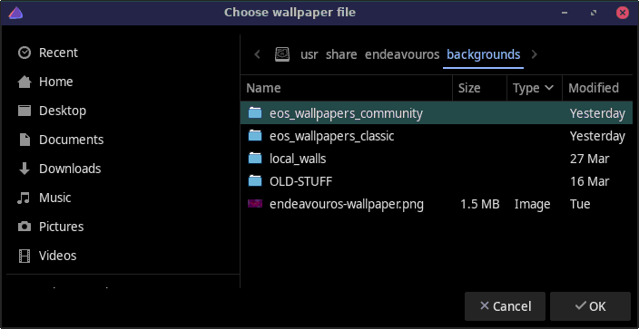

Sets the wallpaper from the given file, or lets user to select it from the given folder.

eos-wallpaper-set [name | file | folder]name DEFAULT The default wallpaper.
ISO Wallpaper used by the ISO.
file Full or relative path to a wallpaper file.
folder Full or relative path to a folder containing wallpapers.Without parameters eos-wallpaper-set opens the
EndeavourOS default wallpaper folder and lets user select the
wallpaper.
eos-wallpaper-set ~/Pictures/a_picture.jpg # wallpaper file name
eos-wallpaper-set ~/Pictures # folder path for pictures
eos-wallpaper-set DEFAULT # default EndeavourOS wallpaper
eos-wallpaper-set ISO # wallpaper used by the ISO
eos-wallpaper-set # starts the wallpaper chooser